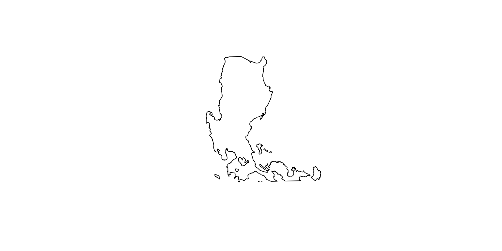
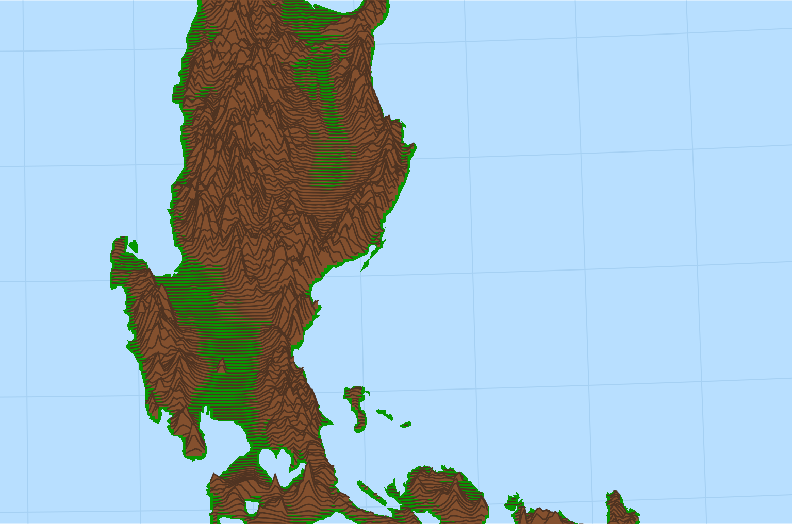
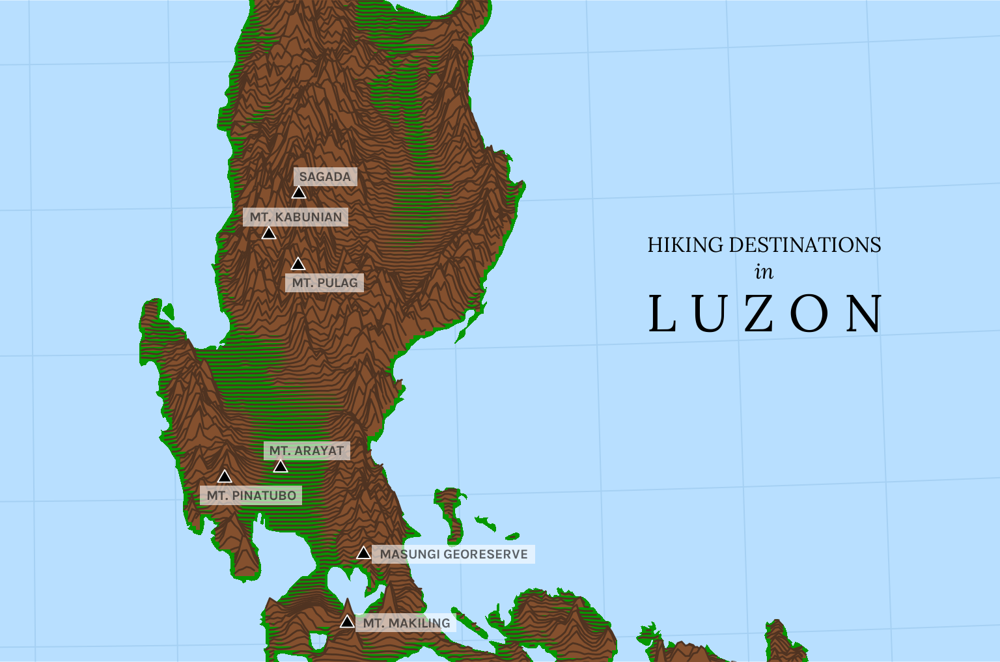
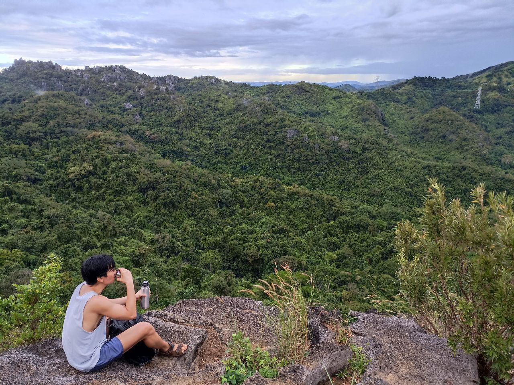

library(tidyverse)
library(sf)
library(terra)Luzon’s hiking trails
Creating a stylized map of mountains using ridgelines
R
ggplot
I have lately been experimenting with R’s map-making capabilities, and as a project I wanted to try visualizing the great mountain ranges of Luzon. The Philippines has some remarkable mountain ranges, and hiking through them is a unique sort of pleasure that I only discovered recently.
An obvious approach would be to make a relief map, with colors corresponding to elevation, but to make it more interesting I decided to create a more stylized ridgeline-style map. A ridge plot is… hard to describe. Look up the album cover of Joy Division’s Unknown Pleasures and you’ll understand. I am indebted to dieghernan’s tutorial on mapping with ridgelines.1
Let’s start by loading up the basic packages.
The coastline of the Philippines can be obtained from the rnaturalearth package.
library(rnaturalearth)
library(rnaturalearthdata)
library(rnaturalearthhires)
ph <- ne_countries(scale = 10, country = "Philippines", returnclass = "sf")
luzon <- ph %>%
st_crop(
xmin = st_bbox(ph)$xmin %>% as.numeric(),
xmax = st_bbox(ph)$xmax %>% as.numeric(),
ymin = 13.5,
ymax = 18.5
) %>%
st_transform(25391)This returns a simple features or sf object, which has a geometry column that draws the coastline of the Philippines. The st_crop() function subsets the polygon to our area of interest while the st_transform() function sets the coordinate reference system to “Luzon 1911 / Philippines zone I” (EPSG code 25391).
Because this only draws the coastline, the major Luzon lakes of Laguna de Bay and Taal are not defined. We can load their polygons from rnaturalearth as well:
lakes <- ne_download(scale = 10, type = "lakes", category = "physical", returnclass = "sf") %>%
mutate(in_luzon = str_detect(name, "Laguna de Bay|Taal")) %>%
filter(in_luzon == TRUE) %>%
st_transform(25391) %>%
summarize()We can then use lakes to “punch holes” into the luzon polygon:
luzon <- st_difference(st_geometry(luzon), st_geometry(lakes))
plot(luzon)
To draw the ridges that symbolize Luzon’s mountain ranges, we need elevation raster data. This is taken from the elevatr package using the get_elev_raster() function.
library(elevatr)
dem <- get_elev_raster(luzon, z = 7, clip = "bbox", expand = NULL) %>%
rast() %>%
mask(vect(luzon))
names(dem) <- "elev"The rast() function converts it into a SpatRaster object, which is native to the terra package. The mask() function removes all cells outside the luzon polygon.
This raster actually provides more granularity than we want, so we aggregate the cells up to get a lower resolution. Then we convert it to a data.frame for plotting with ggplot2.
dem_agg <- aggregate(dem, round(nrow(dem) / 200))
dem_df <- as.data.frame(dem_agg, xy = TRUE, na.rm = FALSE)The luzon polygon is plotted using geom_sf() while the ridgelines obtained from elevated data are plotted using geom_ridgeline() from the ggridges packages.
library(ggplot2)
library(ggridges)
# Set expanded boundaries
coords <- st_bbox(c(xmin = 118.75, xmax = 125.75, ymin = 13.75, ymax = 18.25),
crs = 4326
) %>%
st_as_sfc() %>%
st_transform(25391) %>%
st_coordinates()
map <- ggplot() +
geom_sf(data = luzon, color = NA, fill = "#069801") +
geom_ridgeline(
data = dem_df,
aes(x = x, y = y, group = y, height = elev),
scale = 25, fill = "#84502e", color = "#4f3321"
) +
coord_sf(
xlim = coords[c(1, 2), 1],
ylim = coords[c(2, 3), 2],
expand = FALSE
) +
scale_x_continuous(expand = c(0, 0)) +
scale_y_continuous(expand = c(0, 0)) +
theme_ridges() +
theme(
plot.margin = margin(0, 0, 0, 0),
panel.background = element_rect(fill = "#b8dfff"),
panel.grid.major = element_line(color = "#a5d0f3"),
axis.title = element_blank(),
axis.text = element_blank(),
axis.ticks.length = unit(0, "cm"),
)
map
You can see how vividly the ridgelines capture Luzon’s mountains. It’s practically 3D!
I now want to add markers for some of the more famous hiking trails in Luzon. I can easily get their coordinates using Google Maps, but a complication to deal with is that the coordinate reference system (CRS) of Google Maps is different from the one I’m using here. I must therefore use st_transform() to reproject them first.
spots <- here::here("datasets", "hikingspots.csv") %>%
read_csv() %>%
mutate(label = toupper(label))
coords <- spots %>%
st_as_sf(agr = "constant", coords = c("x", "y"), crs = 4326) %>%
st_transform(25391) %>%
st_coordinates()
spots <- cbind(spots, coords)Finally, I downloaded some Google fonts for some added fanciness. Here is the final chart:
Code
library(ggrepel)
map +
geom_point(
data = spots,
aes(x = X, y = Y),
size = 2.5, shape = 24, linewidth = .75, color = "white", fill = "black"
) +
geom_label_repel(
data = spots,
aes(x = X, y = Y, label = label),
family = "karla", fontface = "bold", size = 8 / .pt,
hjust = .5, vjust = .5, nudge_x = 10000, min.segment.length = 1, label.r = unit(0, "lines"), label.size = NA, label.padding = unit(.2, "lines"), alpha = .6
) +
# Fancy plot title
annotate("text",
x = 1.27 * 10^6, y = 1.855 * 10^6, hjust = .5,
label = "HIKING DESTINATIONS", family = "lora", size = 12 / .pt
) +
annotate("text",
x = 1.27 * 10^6, y = 1.835 * 10^6, hjust = .5,
label = "in", family = "lora", fontface = "italic", size = 12 / .pt
) +
annotate("text",
x = 1.27 * 10^6, y = 1.803 * 10^6, hjust = .5,
label = "L U Z O N", family = "lora", size = 30 / .pt
)
My one hiking experience so far was at Nagpatong Rock, near Masungi. It was arduous and muddy and I slept for 12 hours afterwards. But for that brief moment at the peak, as I sipped cold coffee and braced myself against the wind, I looked out at the view and found it absolutely grand.

Stay elevated! 
Footnotes
And let me just say that learning to make maps in
Rhas been bewilderingly difficult. I have found Geocomputation with R useful, but much of it remains mysterious to me.↩︎